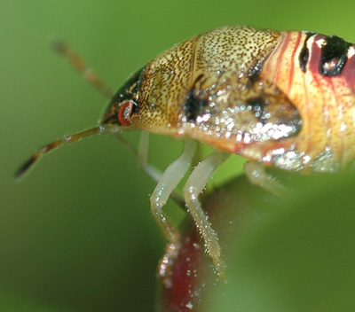

Sunday, October 30, 2005
|Wednesday, October 26, 2005
Available Light
More rain. The eye strains after light. f/2, f/1.8 -- the iris opens, the dilated pupil drinks at a paltry stream of photons. Impressions stir into being on multiple thirsty surfaces of silicon, silver, blood. The world and its image appear pale, attenuated, washed out. Gray.
The tired doctor listens to her patient. The woman is talking about her left eye.
"I saw white. Just white. Everything was white. I was afraid."
The doctor mounts a step stool. She is short, her patient is tall. She sometimes feels like a mountain goat clambering over the landscape of patients' bodies; other patients, small and frail, make her feel lumbering and monstrous. Like Alice in Wonderland. Sometimes big, sometimes small. Is she really there at all ? Really ?
She shines a light onto the errant left eye. The iris is light brown; two hard red blotches -- one long, one small and triangular, overlie it. She peers more closely at the eye. She squints. What could they be ? Something amiss ? A normal variant ? A type of freckle she's never seen before ?
She excuses herself. She'd retrieve her magnifying headset, her favorite toy, from her desk. She takes every opportunity to don her beautiful magnifiers -- sutures, rashes, pimples, blotches, spots. "I'll go get my magnifier," she says. Patients don't seem to mind. The staff giggles to see her headed down the hall in her bug-like goggles.
She warns the woman, as she does all her about-to-be-magnified patients, about the short focal length of the lenses. It is so short that she must hover inches above patient's surface: an intimate distance. She thinks of her childhood optometrist, Dr. L., and of the sound of his raspy, snorting breath as he examined her retina with the ophthalmoscope. She'd hated that. It was too close. Too hot. Too smelly. She has always tried to hold her breath when examining her own patients' eyes.
She settles the lenses on her nose, shines a light at the woman's face, and leans in. The eye swims into focus. She thinks of taking pictures, of photographing weeds in the field by the river. Of leaning in until the seed or stamen is crisp and clear in the viewfinder. What draws her to magnification, to close-up ? It's intimacy, she thinks, the eye's cool intimacy. It's not like the raspy face-to-face, breath-to-breath intimacy of human interaction. She and the weeds hold their breath. Suddenly there is nothing but weed image -- that marvelous nexus of light, plant, eye, brain. The voice-over stops. The film score is in grand pause. What is it ? Some marvelous union has occurred, and yet something, something remains behind the screen, elusive and obscure What is it ? Of course she can only hold her breath so long. She shoots, gulps in air, and returns to herself.
Her patient is breathing quietly. The doctor looks.
She looks first at the long, dark red streak. It begins at the iris' edge, right at the verge of the black abyss of the pupil. From there it extends and expands, plume-like, across the anterior chamber, and ends in a pale, round, foggy stain on the inside surface of the cornea. She stares. It is oddly beautiful; it quivers slightly; it is, probably, blood.
She's gone as far as she can go. She sighs. She would have to summon her colleague, the ophthalmologist, the man with the big lens. With his slit lamp microscope he could dive right into the beautiful red plume if he wanted to. In 3-D technicolor. He'd know exactly what it was. Plus, even more to the point, he'd know how to fix it.
She waits on hold at her desk and looks out at the parking lot. It's still gray, still raining. Patients are hurrying to and from their cars. The only spot of color is the bright yellow newspaper box on the sidewalk just outside her window. She frames it in her mind. At f/1.8 the background would become a shimmering soup. She hopes the sun will return by the week end. She wants to take pictures.
The on hold music noodles on. She looks at the photo taped to the wall just beyond her desk. The andromeda galaxy, a beautiful, round, white flower. Stars around it, like wind-blown pollen.
What is it all, anyway ?
Crushing absurdity ? Numinous mystery ?
Where does it all end ?
Will she fall into the luminous heart of the blazing sun ?
Will she plunge into into the rabbit hole of the sightless eye, fixed and dilated on eternity ?
She hangs, for the time being, perilously suspended between the two.
Wednesday, October 19, 2005
A Movie Moment
Who was I this morning, Bill Murray waking yet again to the same radio announcer reading the same weather report, or Roy Scheider in front of the bathroom mirror squirting Visine into his bloodshot eyes, muttering "It's showtime !" ?
Probably both.
Groundhog Jazz.
Probably both.
Groundhog Jazz.
Tuesday, October 18, 2005
Into The Gap
As I was chewing toast yesterday morning (well, what did you think I ate for breakfast ?)the strange pink plaster that had been covering dearly departed tooth #12's cellar hole came off. The dentist has warned me that it might, and I was not to fret.
It had stayed put, after all, for ten days, providing my tongue with many interesting moments of exploration. She had also warned me not to fret about any errant "granules" that might be extruded from the site. I'd tuned her out at that point. "Extruding granules" was far too creepy.
So after I'd swallowed the toast and probably some remnant bits of strange pink plaster, I approached the site with my tongue. Gingerly. There was the row of rough, catgut sutures on the gum. And there, beneath them, horrible, unplumbable, the abyss. The Gap. We're not talking neat piles of folded tee shirts here. We're talking open grave.
Oh. My. God. There's a CRATER up there ! No, an abandoned mine shaft ! A tunnel directly through cheekbone and eye socket right into my frontal lobe ! She did a friggin' LOBOTOMY and she never told me ! And she said she put GRANULES up there ? What did she say they were ? Something about collagen ? Or was it silicone ? Naphthalene ? Botox ?
I took a deep breath. This was it. The moment of reckoning. I could feel my face beginning to collapse into the black hole in my right upper gum: lips, cheek, ear, eye, nose. Soon the rest of me would follow ! I was imploding ! Inverting ! I had to do something, and fast !
So I took a big, big bite of toast and hoped for the best.
Nirvanax (TM)
A stray JAMA crossed my desk late this afternoon. In an idle moment, I picked it up and opened it. I was confronted with a slick, two-page drug ad. My eye was drawn to the right hand page, where enormous white letters on a lavender background asked:
ANXIETY ?
On the left page was a colorful drawing, a cartoon, of two people in a car. A smiling, placid man is driving. In the passenger seat, wild eyes bulging, teeth clenched, mouth downturned, hands upraised to cheeks a la Munch's "The Scream," is a woman out of whose head is arising a tornado-like representation of anxiety, full of icons of distress: a crashing plane, a doctor's exam room door, traffic jams, and, at the very top, a credit card with shark teeth and a fin, and a horrified looking piggy bank fleeing three running coins.
"Anxiety," reads the ad, "Can Take A Backseat -- With NIRAVAM (tm)"
Niravam, eh ? Let's play a little pharmaceutical scrabble, shall we ?
Niravam.... Nirvama.... Nirvana.... Bingo ! Bliss !
Turns out "Niravam" is a rapid-dissolving version of alprazolam, the highly addictive and abusable benzodiazepine tranquilizer also known as Xanax. The ad cites a "study" (N=59, data on file with the company) that purports to show that patients like getting at their alprazolam quickly, conveniently and discretely. No more swallowing their Xanax or (god forbid) their generic alprazolam with a glass of water by God ! Just pop a Niravam (TM) under the tongue and its O to bliss in 10 minutes flat !
What's next, a snortable or smokable version ?
That's pharma-scientific rigor for you, right up there with intelligent design. As in:
Wasn't it intelligent of us to re-design the vehicle of this old, generic drug so we can reap fresh, new profits by dint of our slick, new marketing gimmicks !
This drug ad manages to insult physicians, people afflicted with anxiety disorders, women and a major world-wide religion in one bold, asinine gesture.
Is there small print ? You betcha. Reams of it.
Certain adverse clinical events are a direct consequence of physical dependence to alprazolam. These include a spectrum of withdrawal symptoms, the most important being seizure.
Adverse clinical event. Spectrum of symptoms.
Oh, yeah. SEIZURES !!!!
Gotta lovethe Poets of Big Pharma. They have such a way with words.
ANXIETY ?
On the left page was a colorful drawing, a cartoon, of two people in a car. A smiling, placid man is driving. In the passenger seat, wild eyes bulging, teeth clenched, mouth downturned, hands upraised to cheeks a la Munch's "The Scream," is a woman out of whose head is arising a tornado-like representation of anxiety, full of icons of distress: a crashing plane, a doctor's exam room door, traffic jams, and, at the very top, a credit card with shark teeth and a fin, and a horrified looking piggy bank fleeing three running coins.
"Anxiety," reads the ad, "Can Take A Backseat -- With NIRAVAM (tm)"
Niravam, eh ? Let's play a little pharmaceutical scrabble, shall we ?
Niravam.... Nirvama.... Nirvana.... Bingo ! Bliss !
Turns out "Niravam" is a rapid-dissolving version of alprazolam, the highly addictive and abusable benzodiazepine tranquilizer also known as Xanax. The ad cites a "study" (N=59, data on file with the company) that purports to show that patients like getting at their alprazolam quickly, conveniently and discretely. No more swallowing their Xanax or (god forbid) their generic alprazolam with a glass of water by God ! Just pop a Niravam (TM) under the tongue and its O to bliss in 10 minutes flat !
What's next, a snortable or smokable version ?
That's pharma-scientific rigor for you, right up there with intelligent design. As in:
Wasn't it intelligent of us to re-design the vehicle of this old, generic drug so we can reap fresh, new profits by dint of our slick, new marketing gimmicks !
This drug ad manages to insult physicians, people afflicted with anxiety disorders, women and a major world-wide religion in one bold, asinine gesture.
Is there small print ? You betcha. Reams of it.
Certain adverse clinical events are a direct consequence of physical dependence to alprazolam. These include a spectrum of withdrawal symptoms, the most important being seizure.
Adverse clinical event. Spectrum of symptoms.
Oh, yeah. SEIZURES !!!!
Gotta lovethe Poets of Big Pharma. They have such a way with words.
Saturday, October 15, 2005
Retinas
The anonymous photographer has presumably issued his instructions. Stand there. Smile. Hold still. You, move in a little closer. That's right. It is a group photo, a record of a festive day, a party of some sorts. The album says, tersely, "Tewksbury, The Farm." It is undated.
It appears to be summer. The forearms of the women are bare and their dresses are loose and light. Some of the men, however, wear vests; one, with a sleeping child on his lap, wears a stiff collar, a tie and a fedora.
The people are posed, still, but seem on the verge of movement. There could be an eruption, an escape, a dispersal into anarchy at any moment. The wind whips the dark young woman's bobbed hair into her eyes; it practically tears the bow from the seated child's head. The blond girl at the edge of the frame squirms with apparant delight against a woman's hip. The woman, face half hidden by a large hat, looks down at her, scolding perhaps, and holds her close. She drapes her other arm around the shoulders of the woman who would become my grandmother, my Bubbi.
Bubbi, younger then than I am now, smiles straight at the camera. She rests one hand coyly, on her hip. I am starled by the ease and sexiness of the pose. It is not a face of my grandmother that I recognize.
Beside her, at the eccentric heart of the picture, is the musician, my grandfather-to-be. He is fully the grandfather I remember: quiet, serious, self-effacing, shy, kind. He seems queerly alone in the midst of the group, as solitary and absorbed as the anonymous man behind the camera lens. The snaking stripes of the fully extended accordian form the visual focus of the photo, its breathing center. It lunges down and back toward a infant sleeping, propped bolt upright, on the fedoraed man's lap.
Who is the baby ? Could it be my father ? And could the blond, smiling girl be his sister, my aunt ?
My grandmother insisted on photographs. She hauled her family to the studio. She hauled them in front of the photographer's lens. Later, my Aunt would marry Peter, a photoengraver by trade and a photographer by avocation. He and my father made the tenement pantry into a darkroom. Sepia history brightened into black-and-white.
Light enters through the shutter, strikes the light-net, leaves its image trace. It is stored in brain, or on paper, or, reduced to 0's and 1's, in phosphor files. Memory, we call it, literally and metaphorically. We look, and remember. The paper remembers its one, brief instant of light. The paper reminds us and we remember. Or we don't.
Who is that strange man next to Cousin Minnie ?
And the image-making -- the light-taking, the time-taking -- continues. The photos are as innumerable and self-replenishing as leaves. They fade, memory fades; soon, no manner of mnemonic will work.
Who is that stranger in the photo ? Who is that woman in the mirror ?
So many images ! We never really believed in them, in their power, their efficacy. They're simple ghosts. Will'o'wisps. They barely cohere. Yet there was something, once, that left a trace. It's here, now, on my table, redacted, translated, but unmistakable.
And so I look, and take --

and look again and take --

and will ask (while there's still time) -- do you remember that hot summer day on the farm ? That day nearly eighty years ago ? Who is that smiling girl ? Who is that baby boy ?
And who will remember this October day, this rain ?
Friday, October 14, 2005
More Light
It's been raining for days. Camerawoman and bicycleman are depressed. The promised return of the sun gets pushed back daily. Late Saturday, maybe, the weatherman says, oddly tentative. We suspect he is lying to bolster public morale. We suspect he knows something we don't know. The sun has gone on permanent hiatus, or at least a lengthy sabbatical. It's been replaced by old steel wool.

"The sun will return," the weatherman crows, his voice edged with hysteria, "and then it will be breezy."
Breezy ! fumes camerawoman, picturing grassy seedheads pitching wildly back and forth in the viewfinder. Great. More blur.
Camerawoman is beginning to understand blur. It has taken her deeper into optics than she has cared to venture. Focal length ! "Fast" lenses ! My God why didn't someone TELL her that "zoom" is not the same thing as "telephoto" ! And what the hell is EV anyhow ?
Camerawoman bought a fast lens, a prime lens -- the fabulously sharp and fabulously cheap Nikon 50mm f/1.8 -- at the local Very Serious Camera Store. She approached the Dour Serious Men at the sales counter, hoping not to flub the jargon, hoping not to appear the neophyte that she was. She was doing fine until Dour Serious Man said, answering a question she'd ventured, that obtaining a reversing ring for the 50mm 1.8 would be "interesting."
"Interesting ?" she asked.
He said muttered something fast, pithy and incomprehensible about "metering."
Oh yes ! I see !
She didn't, actually.
Camerawoman has a long history of blundering enthusiasms.
In high school camerawoman, a bad marching band clarinetist, somehow came into an old trumpet. She taught herself a few scales and begged Mr. G., the band director, to let her play third trumpet in the band's next half time show. How hard could it be ? Some half notes, some rests. Left right left.
It did not go well.
By the 30 yard line, left right left became pfft, gasp, pffft. There was little or no music. There was jaw pain and dyspnea. It was camerawoman's first and last gig as trumpet player.
Then there came the saxophone. The battered, silver alto sax. How cool was that ? Mr G., remembering the trumpet fiasco, drew the line at the sax. Camerawoman would show him. She and her buddies would form their own band ! After all, the high school talent show was coming up. They'd enter ! Marjorie would play drums, Carlene was a fellow clarinetist and Marilyn -- the only real musician in the bunch -- would play the piano. Camerawoman, of course, would play the battered silver saxophone. They rode the Greyhound Bus into Boston and got some sheet music at Carl Fischer's. Marjorie's Mom sewed up four matching hot pink cotton dresses with psychedelic polyester sleeves. They practiced. Giggled. Ate oreos.
They were geeky, grotesque, and their rendition of "I've Got Rhythm" and "Windy" won first prize. Camerawoman has the trophy to prove it.
She just wishes someone -- equipped with a fast telephoto zoom and blur-reducing tripod -- had thought to take a picture.

"The sun will return," the weatherman crows, his voice edged with hysteria, "and then it will be breezy."
Breezy ! fumes camerawoman, picturing grassy seedheads pitching wildly back and forth in the viewfinder. Great. More blur.
Camerawoman is beginning to understand blur. It has taken her deeper into optics than she has cared to venture. Focal length ! "Fast" lenses ! My God why didn't someone TELL her that "zoom" is not the same thing as "telephoto" ! And what the hell is EV anyhow ?
Camerawoman bought a fast lens, a prime lens -- the fabulously sharp and fabulously cheap Nikon 50mm f/1.8 -- at the local Very Serious Camera Store. She approached the Dour Serious Men at the sales counter, hoping not to flub the jargon, hoping not to appear the neophyte that she was. She was doing fine until Dour Serious Man said, answering a question she'd ventured, that obtaining a reversing ring for the 50mm 1.8 would be "interesting."
"Interesting ?" she asked.
He said muttered something fast, pithy and incomprehensible about "metering."
Oh yes ! I see !
She didn't, actually.
Camerawoman has a long history of blundering enthusiasms.
In high school camerawoman, a bad marching band clarinetist, somehow came into an old trumpet. She taught herself a few scales and begged Mr. G., the band director, to let her play third trumpet in the band's next half time show. How hard could it be ? Some half notes, some rests. Left right left.
It did not go well.
By the 30 yard line, left right left became pfft, gasp, pffft. There was little or no music. There was jaw pain and dyspnea. It was camerawoman's first and last gig as trumpet player.
Then there came the saxophone. The battered, silver alto sax. How cool was that ? Mr G., remembering the trumpet fiasco, drew the line at the sax. Camerawoman would show him. She and her buddies would form their own band ! After all, the high school talent show was coming up. They'd enter ! Marjorie would play drums, Carlene was a fellow clarinetist and Marilyn -- the only real musician in the bunch -- would play the piano. Camerawoman, of course, would play the battered silver saxophone. They rode the Greyhound Bus into Boston and got some sheet music at Carl Fischer's. Marjorie's Mom sewed up four matching hot pink cotton dresses with psychedelic polyester sleeves. They practiced. Giggled. Ate oreos.
They were geeky, grotesque, and their rendition of "I've Got Rhythm" and "Windy" won first prize. Camerawoman has the trophy to prove it.
She just wishes someone -- equipped with a fast telephoto zoom and blur-reducing tripod -- had thought to take a picture.
Sunday, October 09, 2005
| |
Wednesday, October 05, 2005
Deracinement
In two hours tooth #12 and I are going our separate ways.
It has a cracked root. A vertical crack. Or so the theory goes. No one is quite sure. It has endured a root canal, a crown and a gum debridement. It barely dodged an apicoectomy (believe me, you do not want to know what that is). It has given me many interesting hours of, oh, agony. It landed me in the periodontist's chair last summer.
After her dire predictions -- a dental domino theory of rotting teeth, brain abscesses and heart attacks -- and a raft of byzantine proposals involving packing my gums with human tissue and screwing things into my jaw, I politely backed away and went into swift and complete denial. #12 was, at that point, behaving itself. Oh, sure, if I bit down too hard on it, it replied with a weird little painless throbbing thing, a tooth's equivalent of a whimper. But a week or so ago its whimper rose to a groan, and, fearing upcoming unearthly screams, I phoned up the doctor. Best put the thing out of its misery.
But I drew the line. No creepy human tissue. No implants. Just yank the thing. Maybe (and then again maybe not) I'll have my dentist make me a fake little clip-on tooth.
It's depressing me. It seems like the beginning of the end. The first leaf of autumn falling off the tree. Today I begin my metamorphosis into toothless hag. I remember the day I first got my period my Mom handed me a pamphlet and a box of Kotex. I remember one thing from the pamphlet -- a photo of smiling adolescents, boys and girls, standing around a piano and singing. Apparantly that's what adolescents did for fun in 1960's. Good clean fun. No blood. No sex. No back alley abortions. No venereal diseases. Just sing-alongs. Someone's in the kitchen with Dinah ! Strummin' on the Old Ban-jo !
I'll probably get some kind of pamphlet today. So You've Lost Your First Tooth ! It will feature gauzy close-ups of dentures submerged water glasses. With that awful pink fake-gum plastic scaled with scraps of old polident. Senior citizens humming around a piano.
Last week a fierce wind cracked our spindly maple tree at the waist, and it toppled onto the Stick Boys' roof. DK summoned the arborist, and Mrs. Stick Boy summoned her insurance man. The workman and the bureaucrat arrived immediately. It was, by all accounts, like a scene from Brazil -- Robert DeNiro descending on ropes, Jonathan Pryce pulling up in his queer little car with an armful of byzantine forms.
They converged around the felled creature.
The Stick Boy family consists of a mom, a dad, a daughter or two and an enormous brace of boys of varying ages whose favorite pastime is hitting things with sticks as they run back and forth in their little back yard. Their signature tune -- whap whap whap whap whap whap whap -- floats over the back fence with a hail of balls, action figures, empty snack packets and other boyische effluvia, punctuated by pere Stick Boy's loud, angry shouts.
Last year the Mr and Mrs Stick Boy left us a note. It went something like this.
Dear Flamingo People. We would like you to cut down all your trees. Their shade prevents the grass from growing in our backyard and makes our back yard very damp. There is even mold here ! Thank you.
I bit my tongue. I did not point how their grass appeared to be trampled to dry dirt by their stampeding children. I did not suggest they cut off the stickboys' feet. We told them to feel free to trim whatever branches had strayed over their property.
Mrs Stick Boy has had a strange, almost perverse vendetta against the several small maple trees along our back fence. One morning a few years ago I looked out at our back yard and was surprised to see her standing there beside one of the trees. She was staring down at its base where a solitary branch had sprouted and was upthrust in a jaunty, Viagra-like angle.
I watched as she grabbed the errant branch, snapped it off and returned to her yard.
Staring up at the maple tree that had swooned onto their roof, the one she'd emasculated a few years back, Mrs Stick Boy was emboldened. She seized the day. She pleaded her case. They would all have to go. Really. Nothng else would do. She pointed at the downer's neighbor. Just look at all those branches sticking willy-nilly over her fence. Causing toxic shade to overspread her back yard. Suffocating her lawn, rotting the foundation of her house, killing and maiming her children. DK stared at his shoes. The arborist looked skyward. The insurance man scribbled in his ledger.
They did not tackle the big questions, though. Had the poor castratus finally exacted its revenge on Mrs Stick Boy ? And, if so, was it sweet ? Or had the tree avenged me, providing one, loud, answering whap ! to years and years of Stick Boys' whap whap whaps ?
The arborist pointed out that some maple branches were touching our own house. That was, he said, a Very Bad Thing. Bound to cause quasi-dental cascades of domestic catastrophe. So they made a plan. The arborist would return in the morning, lift the fallen maple from Mrs Stick Boy's roof, then trim a few branches from our remaining trees.
When we returned home the next day, the fallen tree was gone. The neighboring tree was gone. The remaining trees were crewcut. It was a butcher job, a massacre. I stood in the backyard staring up at new expanses of sky. Was that a cackling a I heard from behind the fence ? What will survive creeping defoliation ? Vinyl siding ? Boys with sticks ? Castrating mothers ? Bellowing fathers ?
So I, maybe out of unconscious, couvade-like sympathy, submit to the pliers. Poor trees. Poor tooth #12. Poor me.
No wonder we're feeling less than chipper this morning.
It has a cracked root. A vertical crack. Or so the theory goes. No one is quite sure. It has endured a root canal, a crown and a gum debridement. It barely dodged an apicoectomy (believe me, you do not want to know what that is). It has given me many interesting hours of, oh, agony. It landed me in the periodontist's chair last summer.
After her dire predictions -- a dental domino theory of rotting teeth, brain abscesses and heart attacks -- and a raft of byzantine proposals involving packing my gums with human tissue and screwing things into my jaw, I politely backed away and went into swift and complete denial. #12 was, at that point, behaving itself. Oh, sure, if I bit down too hard on it, it replied with a weird little painless throbbing thing, a tooth's equivalent of a whimper. But a week or so ago its whimper rose to a groan, and, fearing upcoming unearthly screams, I phoned up the doctor. Best put the thing out of its misery.
But I drew the line. No creepy human tissue. No implants. Just yank the thing. Maybe (and then again maybe not) I'll have my dentist make me a fake little clip-on tooth.
It's depressing me. It seems like the beginning of the end. The first leaf of autumn falling off the tree. Today I begin my metamorphosis into toothless hag. I remember the day I first got my period my Mom handed me a pamphlet and a box of Kotex. I remember one thing from the pamphlet -- a photo of smiling adolescents, boys and girls, standing around a piano and singing. Apparantly that's what adolescents did for fun in 1960's. Good clean fun. No blood. No sex. No back alley abortions. No venereal diseases. Just sing-alongs. Someone's in the kitchen with Dinah ! Strummin' on the Old Ban-jo !
I'll probably get some kind of pamphlet today. So You've Lost Your First Tooth ! It will feature gauzy close-ups of dentures submerged water glasses. With that awful pink fake-gum plastic scaled with scraps of old polident. Senior citizens humming around a piano.
Last week a fierce wind cracked our spindly maple tree at the waist, and it toppled onto the Stick Boys' roof. DK summoned the arborist, and Mrs. Stick Boy summoned her insurance man. The workman and the bureaucrat arrived immediately. It was, by all accounts, like a scene from Brazil -- Robert DeNiro descending on ropes, Jonathan Pryce pulling up in his queer little car with an armful of byzantine forms.
They converged around the felled creature.
The Stick Boy family consists of a mom, a dad, a daughter or two and an enormous brace of boys of varying ages whose favorite pastime is hitting things with sticks as they run back and forth in their little back yard. Their signature tune -- whap whap whap whap whap whap whap -- floats over the back fence with a hail of balls, action figures, empty snack packets and other boyische effluvia, punctuated by pere Stick Boy's loud, angry shouts.
Last year the Mr and Mrs Stick Boy left us a note. It went something like this.
Dear Flamingo People. We would like you to cut down all your trees. Their shade prevents the grass from growing in our backyard and makes our back yard very damp. There is even mold here ! Thank you.
I bit my tongue. I did not point how their grass appeared to be trampled to dry dirt by their stampeding children. I did not suggest they cut off the stickboys' feet. We told them to feel free to trim whatever branches had strayed over their property.
Mrs Stick Boy has had a strange, almost perverse vendetta against the several small maple trees along our back fence. One morning a few years ago I looked out at our back yard and was surprised to see her standing there beside one of the trees. She was staring down at its base where a solitary branch had sprouted and was upthrust in a jaunty, Viagra-like angle.
I watched as she grabbed the errant branch, snapped it off and returned to her yard.
Staring up at the maple tree that had swooned onto their roof, the one she'd emasculated a few years back, Mrs Stick Boy was emboldened. She seized the day. She pleaded her case. They would all have to go. Really. Nothng else would do. She pointed at the downer's neighbor. Just look at all those branches sticking willy-nilly over her fence. Causing toxic shade to overspread her back yard. Suffocating her lawn, rotting the foundation of her house, killing and maiming her children. DK stared at his shoes. The arborist looked skyward. The insurance man scribbled in his ledger.
They did not tackle the big questions, though. Had the poor castratus finally exacted its revenge on Mrs Stick Boy ? And, if so, was it sweet ? Or had the tree avenged me, providing one, loud, answering whap ! to years and years of Stick Boys' whap whap whaps ?
The arborist pointed out that some maple branches were touching our own house. That was, he said, a Very Bad Thing. Bound to cause quasi-dental cascades of domestic catastrophe. So they made a plan. The arborist would return in the morning, lift the fallen maple from Mrs Stick Boy's roof, then trim a few branches from our remaining trees.
When we returned home the next day, the fallen tree was gone. The neighboring tree was gone. The remaining trees were crewcut. It was a butcher job, a massacre. I stood in the backyard staring up at new expanses of sky. Was that a cackling a I heard from behind the fence ? What will survive creeping defoliation ? Vinyl siding ? Boys with sticks ? Castrating mothers ? Bellowing fathers ?
So I, maybe out of unconscious, couvade-like sympathy, submit to the pliers. Poor trees. Poor tooth #12. Poor me.
No wonder we're feeling less than chipper this morning.
Sunday, October 02, 2005
Florae & Faunae
barnyard grass seed
Jerusalem Artichoke pollen
Three leafhoppers

A rather garish beetle

Links
- juan cole
- duemer
- brtomblog
- brtomtwo
- dumbfoundry
- mole
- PaperFrog.com
- Cassandra Pages
- PureLandMountain
- hermitary
- meetingbrook
- philocrites
- hoarded ordinaries
- prairie point
- Via Negativa
- Heart @ Work
- Eschaton
- Frumpy Professor
- Fatshadow
- susurradrluz
- sbpoet
- timegoesby
- depth-witness
- seekingclarity
- self-winding
- eeksypeeksy
- woodslot
- switchedatbirth
- middlewesterner
- pomegranates&paper
- postcards2moi
- mindfullife
- urbanist
- Zippy the Fish
- Laughing~Knees
- nineweaving
- JCA
- thoreau
- adventus
- creeknorth
- NEviews
- frizzylogic
- 3rdhouseparty
- churchless
- thegarden
- oneword
- notnativefruit
- alwaysmorebeyond
- jackzen
- suzanna
- apparantlynothing
- chimesatmidnight
- blaugustine
- sweetpeakate
- thegarden
- q'pop
- spiritblooms
- flamingohouse
- onehouse
- ladybugsleaf
- tothequiet
- shokai
- olderandgrowing
- robe&bowl
- beyondthefields
- returntothecenter
- ravengrrl
- alwaysmorebeyond
- sunpatch ***
- email me

Previous Posts
- Other People's Gardens
- -culture
- Counterweight
- In Which We Know What We Like
- Last Things
- Some Clever And Colorful Cousins
- A Ghost, A Post and Zelig
- Relevant Lines
- Some Saprophytes and an Eremite
- Between
Archives
- 08/01/2003 - 08/31/2003
- 09/01/2003 - 09/30/2003
- 10/01/2003 - 10/31/2003
- 11/01/2003 - 11/30/2003
- 12/01/2003 - 12/31/2003
- 01/01/2004 - 01/31/2004
- 02/01/2004 - 02/29/2004
- 03/01/2004 - 03/31/2004
- 04/01/2004 - 04/30/2004
- 05/01/2004 - 05/31/2004
- 06/01/2004 - 06/30/2004
- 07/01/2004 - 07/31/2004
- 08/01/2004 - 08/31/2004
- 09/01/2004 - 09/30/2004
- 10/01/2004 - 10/31/2004
- 11/01/2004 - 11/30/2004
- 12/01/2004 - 12/31/2004
- 01/01/2005 - 01/31/2005
- 02/01/2005 - 02/28/2005
- 03/01/2005 - 03/31/2005
- 04/01/2005 - 04/30/2005
- 05/01/2005 - 05/31/2005
- 06/01/2005 - 06/30/2005
- 07/01/2005 - 07/31/2005
- 08/01/2005 - 08/31/2005
- 09/01/2005 - 09/30/2005
- 10/01/2005 - 10/31/2005
- 11/01/2005 - 11/30/2005
- 12/01/2005 - 12/31/2005
- 01/01/2006 - 01/31/2006
- 02/01/2006 - 02/28/2006
- 03/01/2006 - 03/31/2006
- 04/01/2006 - 04/30/2006
- 05/01/2006 - 05/31/2006
- 06/01/2006 - 06/30/2006
- 07/01/2006 - 07/31/2006
- 08/01/2006 - 08/31/2006
- 09/01/2006 - 09/30/2006
- 10/01/2006 - 10/31/2006


{kind=link}
{kind=link}
{kind=link}
{kind=link}
{kind=link}
{kind=link}
{kind=link}
{kind=link}
{kind=link}
{kind=link}
{kind=link}
{kind=link}
{kind=link}
{kind=link}
{kind=link}
{kind=link}
{kind=link}
{kind=link}
{kind=link}
{kind=link}
{kind=link}
{kind=link}
{kind=link}
{kind=link}
{kind=link}
{kind=link}
{kind=link}
{kind=link}
{kind=link}
{kind=link}
{kind=link}
{kind=link}
{kind=link}